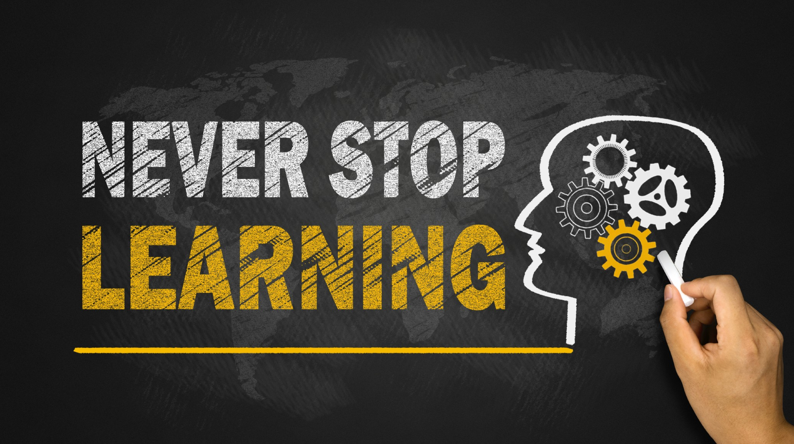

You and Your Learning
Hello guys, back again. In this blog we are going to discuss about you and your learning. I'm discussing about what may problems occurs during learning, how difficulties may encounters and sometimes even putting lots of efforts if problem will not have get solved then how it makes you crazy. So all this kind of problems we are going to discussing about today's blogs.
Learning is the most important and valuble thing of a every living thing but in this blog we are just considering human beings. Leanring means it could be anything like learn to drive a car or learn to swim or learn for educational year. All kinds of learning involves you and the what you want to learns.
What is learning? From my perspective, leanring is the thing that you don't know and you want to get know. As it is not possible to cover all kind of learning in a single blog so we mainly focus on educational learning in this blog. Why do people learns? There could be thousands of reason but what I think is to development yourself, to get knowledgable, to earn and to help society.
Stages of learning:
1) Beginners: In this phase you are totally unaware of the thing but as you at most know that you have to learn this. Example: Baby want to learn stand alone.
2) Intermidiate: You are aware of what you are trying to learn but you have to do something else that may depends on what you have learn in the beginners stage. Example: Baby want to learn walk alone.
3) Expert: You are aware of the thing and you want to be more professional into it. Example: Baby want to learn run alone and he/she want to win at Olympic, funny though.
We are going to explore more about each of this stages.
1) Beginners: This could be dangerous or beautiful stage. Why dangerous? Sometimes when you are learning, you don't get what you wanted and as you are not getting what you wanted, your interest in the problem may get descrease and sometimes you can even quit the learning because it may feels difficult at first. Why beautiful? When you are leaning and you get what you wanted, if your problem is get solved then it will increases your confident. This will help you to learn others things too. Have you notice for the same thing there are two possiblities that either you can solve the problem or you cannot solve the problem during learning. Why is that happenning? Well, it's all about your interest, your focus, your refereces, your way of thinking and the main one how much confident you are. Learning sometimes take you to trouble but it is more important than that is how you come back to your own path again. If you learn how to come back to track again you will clear the first i.e. beginners stage. This is the most important stage of learning, put your all efforts in this stage. This stage can brings you happiness or sadness depends upon how your way of thinking for learning. Example: Lets say I want write an hello world program using API's.
2) Intermidiate: This stage of learning is little bit easier than the beginner stage. As you already went through the hardest stage this step feels you simple than the beginner but this step require more focus. This is 100% succeed stage if you put your interest and be confident while learning while learning. Example: I want to write CRUD operation using API's.
3) Expert: This is the stage in which you have to prove that how well you have understand the concepts of things that you have learned in above two stages. This is real time stage because you have to build something that exists in the real world. Example: I want to build an application which has almost same functionality as facebook, you have to develop this based on your above to stages of knowledge. Expert stage is also difficult.
I would suggest that no matter what stage it is you just keep confident and focus while solving the problem.
1) Books
2) Person
3) Internet
Learning from a books and person are ok, but learning from internet, internet gives you bunch of information some of them are useful and some of them are not. You can learn anything from internet iff you can search effectively. Effectively means how to search relevant to what you are learning. If you learn how to search, it is very easy to learn from internet.
Problems may occurs while learning:
1) You feel like you don't want to do it anymore.
2) You may feel like bore.
3) You will have not found it interesting after some minutes of times.
4) You may feel frustrated.
5) You want to quit.
It is very common to get above problems while learning. If you feel like that then I would suggest you have to take some minutes of break that keeps you energetic again. If you are stuck somewhere and you are still not getting it then have conversation with some other peoples, put all your focus and efforts, do step wise elaboration if something went wrong and don't overthink about it, how overthinking can break you? You can check out my Overthing blog.
As learning is most important thing for anyone, so it is very important to know how many problems you may occurs while learning, if problems are occuring then why they are occurring, How to deal with it and move further, all this we have seen in the blog. Hope it will help you while learning. All the best and Keep learning.
Thank You!